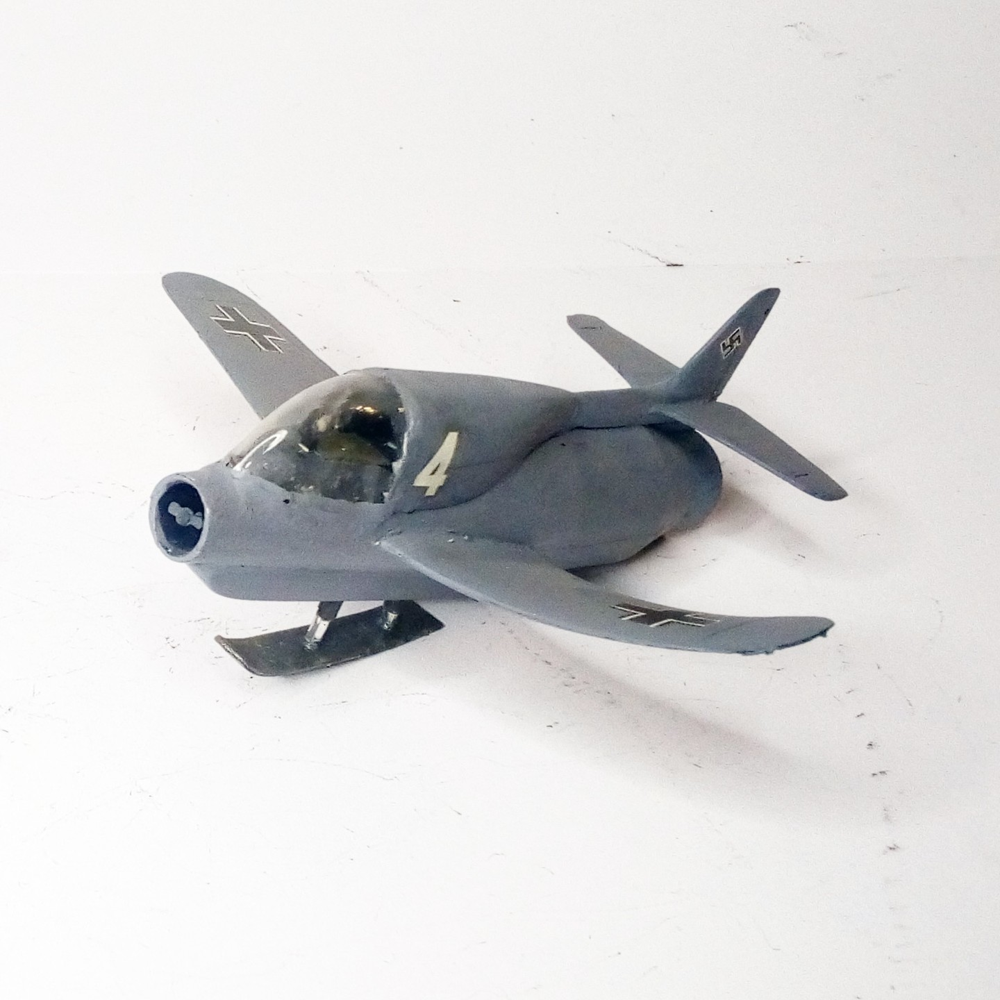
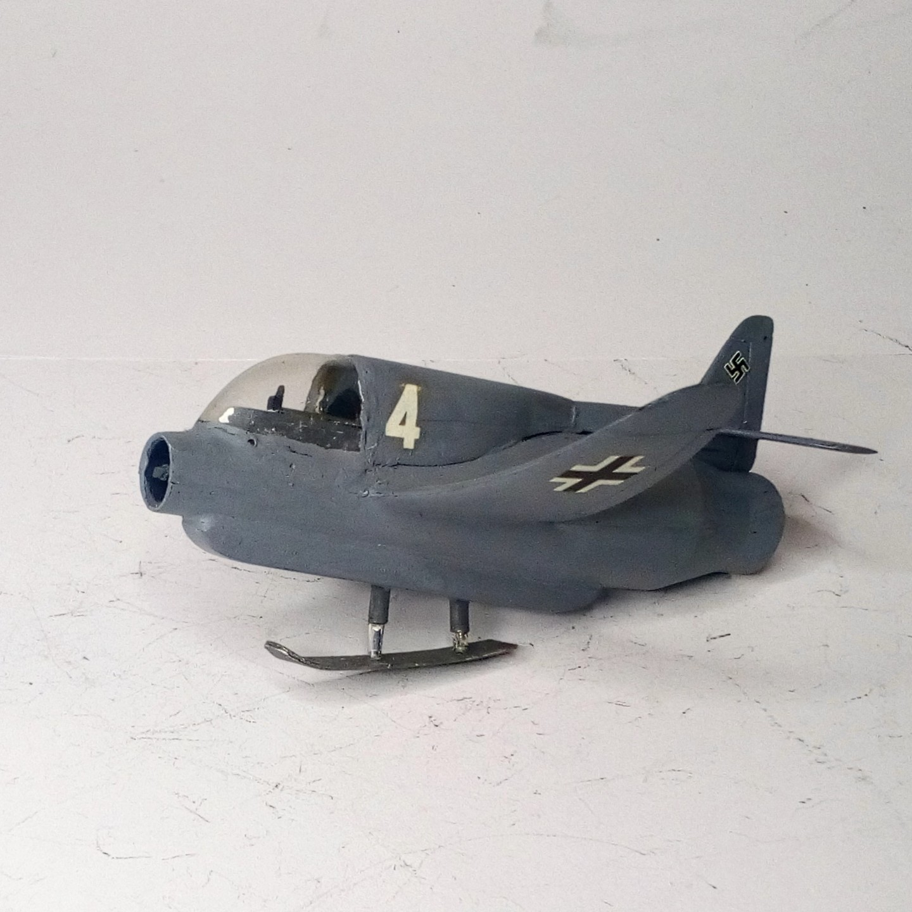
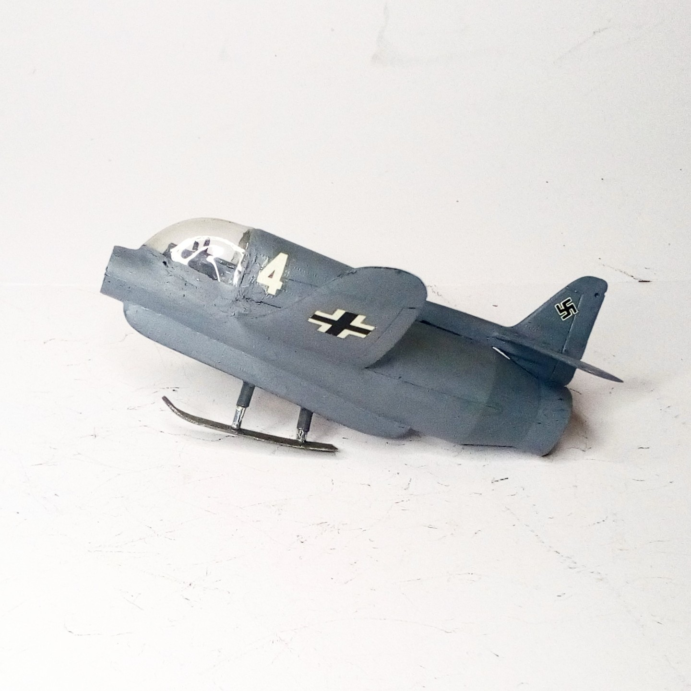

Aerei · scale model archive
Skoda Kauba
Skoda Kauba — Kit: resin, Scale: 1/72. Ramjet-powered interceptor, the pilot laid prone onto the ramjet, Munchausen baron style.... The resin wing, alas,…

Photo gallery


English description
Ramjet-powered interceptor, the pilot laid prone onto the ramjet, Munchausen baron style.... The resin wing, alas, has succumbed to the ravages of time and the oppressive weight, and is now as warped as a particularly wilful corkscrew
#1/72 #resin #Luft46 #SkodaKauba
Descrizione italiana
Intercettore a statoreattore: il pilota era disteso prono sopra lo statoreattore, in stile Barone di Münchhausen. Ahimè, l’ala in resina ha ceduto alle ingiurie del tempo e al peso opprimente, ed è ormai deformata come un cavatappi particolarmente ostinato. #1/72 #resin #Luft46 #SkodaKauba